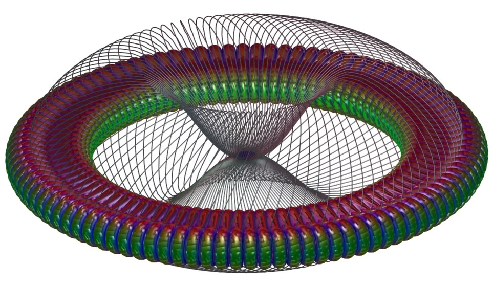

Prashant Kumar

Electrical Engineering & Computer Science
Oregon State University, Corvallis, Oregon, United States
kumarp (at) oregonstate (dot) edu
News
| 03/18/2019 | Joined Divergent Technologies Inc., Torrance, California, as an intern. |
| 07/11/2018 | Our paper on robust and fast extraction of 3D symmetric tensor field topology has been accepted by IEEE Vis 2018 for presentation in Berlin. |
| 08/18/2017 | Our research paper on N-ary relationship visualization has been accepted by SIGGRAPH ASIA 2017 Symposium on Visualization. |
| 07/30/2017 | Our paper on tensor field design in volumes has been accepted by SIGGRAPH ASIA 2017. |
| 07/11/2017 | Our paper on the design and visualization of branched covering spaces has been accepted by IEEE Visualization conference 2017. |
| 06/20/2016 | Joined Mathematica Algorithm R&D team, Wolfram Research Inc., Champaign, Illinois, as an intern. |
I am a PhD student in Electrical Engineering and Computer Science at Oregon State University, Corvallis, Oregon.
Currrently, I am working on geometry processing of non-orientable surfaces under the supervision of Professor Eugene Zhang. I have more than four years of experience at top 3D modeling companies. I have a passion for algorithm design & coding, and I like to apply my technical expertise and my creative problem-solving skills to develop world-class products in the geometric modeling domain. I am a dedicated person who survives in a fast-paced environment and never rests to work on something until it is perfect.
Publications
|
|
|
|
|
|
|
|
|
|
|
|
|  |
|
|
|
Academics
Master of Engineering in Computer Science,
Oregon State University, Oregon, United States
Specialization: Geometric Modeling and Computer Graphics
Advisor: Eugene Zhang
September 2014 - August 2016
Doctor of Philosophy in Computer Science,
Oregon State University Corvallis, Oregon, United States
Specialization: Geometric Modeling and Computer Graphics
Advisor: Eugene Zhang
September 2014 - Present
Bachelor of Science (Honors) in Chemistry,
Indian Institute of Technology, Kharagpur, West Bengal, India
Master of Science in Chemistry,
Indian Institute of Technology, Kharagpur, West Bengal, India
Specialization: Nanoscience
Advisor: Amita (Pathak) Mahanty
August 2003 - March 2008
Professional Experience
March 2019 - July 2019
Intern, Software Development,
Divergent Technologies, Inc., Torrance, California, USA
Description: • Multi-Material Selection Optimization (MMSO)
Developed a tool to recognize and recommend commercial off-the-shelf (COTS) to reduce the overall cost of 3D printing process
Manager: Jinbo Chen, Vice President Of Software Development at Divergent3D, Torrance, California, USA
June 2016 - September 2016
Intern, Mathematica Algorithm R&D
Wolfram Research Inc, Champaign, Illinois, USA
Description: • Linked Wolfram's Mathematica with SideFX's Houdini
Developed software package to connect Mathematica with Houdini, for reading geometry data for plot functions and other functionalities of 3D Printing
Manager: Dr. Charles Pooh, Manager, Discrete Compuatation, Wolfram Research Inc, USA
September 2014 - Present
Graduate Assistant
Department of Computer Science, Oregon State University, Oregon, USA
Description: • Geometry and Field Processing on Non-Orientable Surfaces
Designed and developed topological modifications and remeshing of non-orientable surfaces
• Connectivity Editing for Hexahedral Meshes
Designed and optimized topological modifications of hexahedral meshes
• Robust and Fast Extraction of 3D Symmetric Tensor Field Topology
Designed and visualized degenerate curves and neutral surfaces of 3D symmetric tensor fields
• Interactive Design and Visualization of N-ary Relationships
Designed and visualized N-dimensional binary relationships of graphs and networks
• Tensor Field Design in Volumes
Designed tensor field in volumes important in graphics applications like solid texturing, and geometry synthesis
• Interactive Design and Visualization of Branched Covering Spaces
Designed and visualized branched covering spaces of arbitrary surface and fields
• Visualization of Escher Pattern on 3D models
Designed drawing rules for Escher pattern on triangular mesh
Advisor: Dr. Eugene Zhang, Professor, Department of Computer Sciene, Oregon State University, USA
May 2013 - September 2014
Software Engineer
3DPLM Software Solutions (Dassault Systemes Subsidiary), R&D Division, Bangalore, India
Description: • Designed and developed generalized automation features for applications such as Machining, Robotics, Simulations, Sensors and Riveting Operations
• Managed Product Lifecycle of various modules in Digital Enterprise Lean Manufacturing Interactive Application
Manager: Apparao Kattoju, R&D Senior Applications Manager, Dassault Systemes Solutions Lab, Bangalore, India
September 2008 - April 2011
Software Engineer
3DPLM Software Solutions (Dassault Systemes Subsidiary), R&D Division, Bangalore, India
Description: • Integrated True Type Extension fonts and font size capability into Computer-Aided Three-Dimensional Interactive Application
Responsible for designing, developing, testing and delivering the functionalities to end users
Manager: Manish Patil, Senior Manager - Development, Veritas Technologies LLC, Pune, India
May 2011 - March 2013
Research Assistance
Department of Chemistry, University of Montreal (UDeM), Montreal, Canada
Description: • Studied flow control in microfluidic channels
Explored nanometric deflections of microcantilever actuators in response to a change in pH/potential
Advisor: Dr. Antonella Badia, Professor, Department of Chemistry, University of Montreal, Canada
Teaching Experience
August 2018 - Present
Teaching Assistant,
School of Electrical Engineering and Computer Sciences
University of California, Merced, California
Courses: Data Structures (CSE 30), Computer Graphics (CSE 170), Introduction to Computing I: Java (CSE 020)
January 2014 - March 2016
Graduate Teaching Assistant,
School of Electrical Engineering and Computer Science
Oregon State University, Corvallis, Oregon
Courses:Analysis of Algorithm(CS 325), Introduction to Databases(CS 340),Opertaing Systems I(CS 344) and Translators(CS 480)
Awards
Received Spring 2020 EECS Bobcat Travel Award
Travel Fellowship for NSF funded SOCG 2019, Portland, Oregon
Received Summer 2019 EECS Bobcat Fellowship
Received Spring 2019 EECS Bobcat Travel Award
Received Honorary Citizenship of Corvallis, Oregon for contributions and achievements at Oregon State University by the mayor of city of Corvallis, Oregon, United States
Journal/Proceedings Reviewer
Major Courses, University of California, Merced
CS 287 Computer Animation and Simulation
Major Courses, Oregon State University
CS 551 Computer Graphics
CS 552 Computer Animation
CS 554 Geometry Modeling
CS 556 Computer Vision
CS 557 Computer Graphics Shaders
CS 519 Special Topic: Vector and Tensor Field Visualization
CS 572 Computer Architecture
CS 575 Introduction to Parallel Programming
CS 515 Algorithm and Datastructures
MTH 551 Numerical Linear Algebra
MTH 552 Numerical Solution of Ordinary Differential Equations
Miscellaneous
Peer mentored two first year PhD students under UC Merced GRAD-EXCEL Peer Mentor Program for the academic year 2020-2021
Served as the Secretary of the Merced Indian Graduate Student Association (MIGSA) at University of California Merced for the academic year 2019-2020
Served as Student Volunteer at ACM SIGGRAPH 2019,July 28th- August 1st, Los Angeles, USA
Mentored a senior undergraduate student under REU (Research Experience for Undergraduate) Program during Summer 2015, funded by NSF.
Poster Presentation on Mode Surface Extraction Using A-Patches at Engineering Research Expo held at Oregon Convention Center, Portland, Oregon, Mar 4, 2015.
Active member of technical and scientific committee in the International conference for Transportation Planning and Methodologies for Developing Countries(TPMDC), 2012 at IIT Bombay.
Active member of organising committee in National Conference, InTranSe 2011, Conducted by CDAC, Trivandrum at IIT Bombay.
Awarded a certificate of merit by Howrah Municipal Corporation for securing highest marks in Secondary School Examination in the entire ward(a small divsion of a city).
Lead the school quiz team upto top 8 schools in the QUEST, a Science Quiz competition conducted by Birla Industrial & Technological Museum, Kolkata.
Won 2nd prize in the Kolkata chapter of All Bengal SPELLinc Competition, 2003 and led team to Grand Finale of All Bengal SPELLinc Competition, 2003.
Won 2nd prize in the Quiz Contests conducted by Society of Human Growth, Kolkata and Salkia Bharat Sangha, Howrah in the year, 2002.
Won 3rd prize in the Drawing competition conducted by Kolkata Traffic Police during Road Safety Week, 2001.
Wrote poems for the school magazine and the poem named A Land called India was published in the Hindustan Times(one of the leading newspaper in India).
Participated in two day workshop on "ASTRONOMY FOR ENGINEERS" conducted by Department of Engineering Sciences and Humanities, Siliguri Institute of Technology.